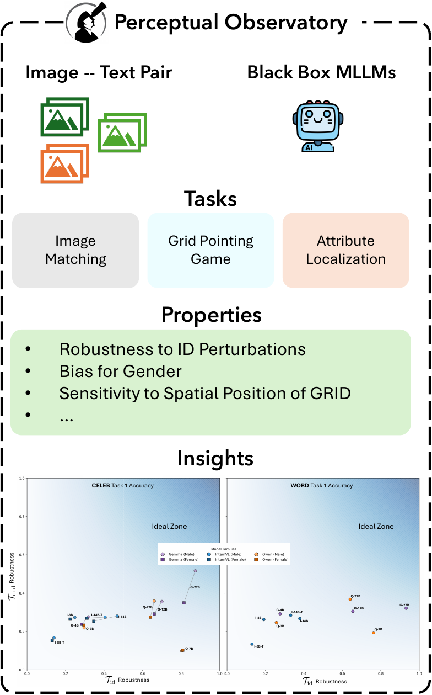
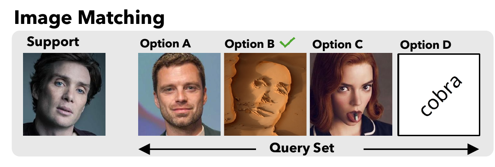
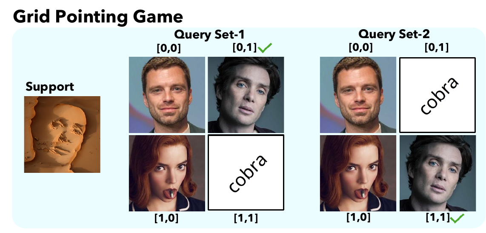
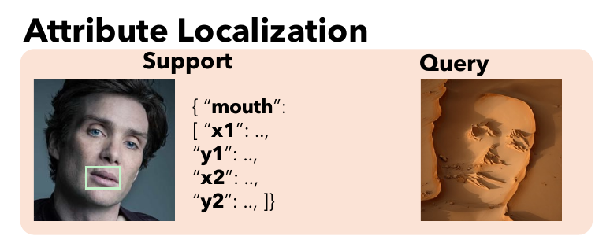
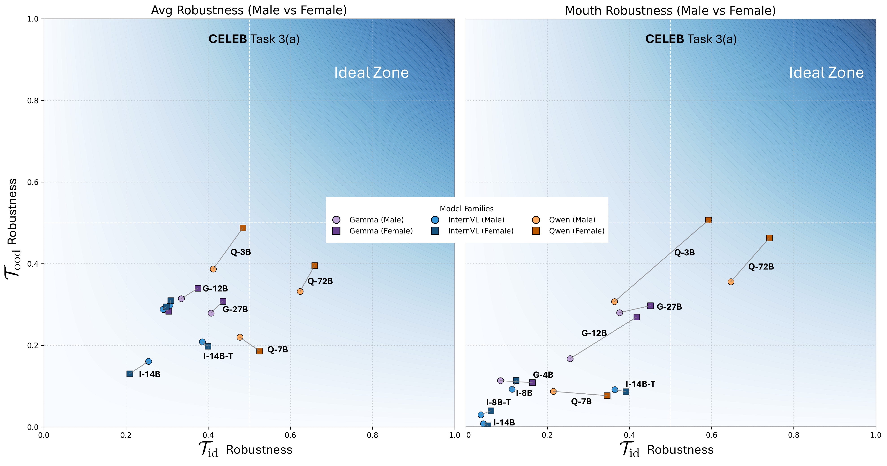
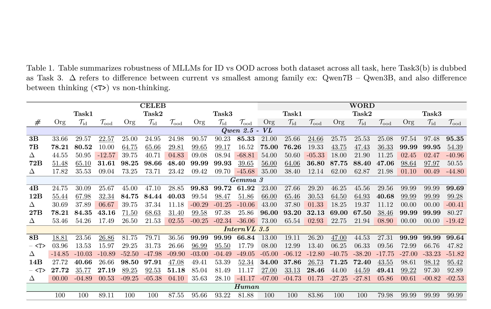
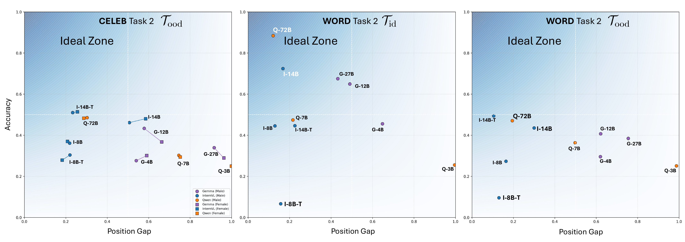
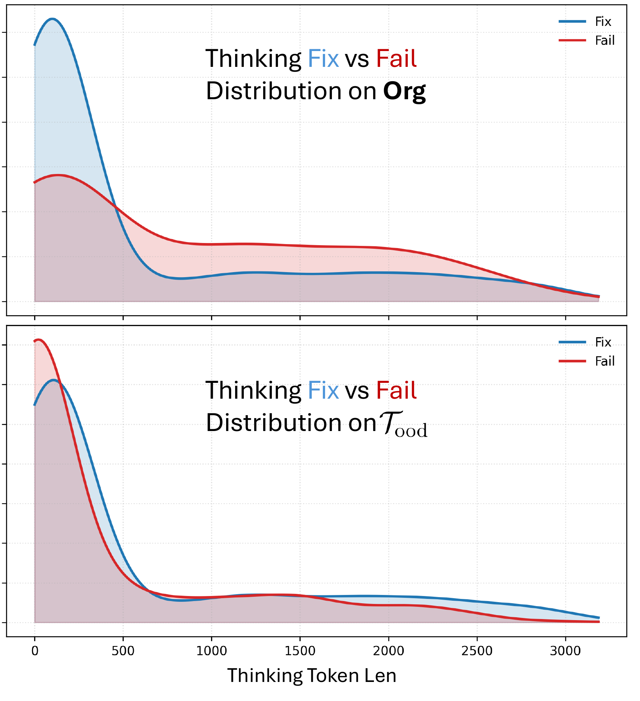

Characterizing robustness and grounding in multimodal large language models (MLLMs) through perception-first benchmarks and structured perturbations.
Why it matters
MLLMs often scale language while reusing vision encoders. The Perceptual Observatory probes whether progress reflects true visual grounding or reliance on textual priors.
What it delivers
A benchmark framework that tests simple vision, local-to-global grounding, and robustness under pixel and diffusion-based perturbations.
Recent advances in multimodal large language models (MLLMs) have yielded increasingly powerful models, yet their perceptual capacities remain poorly characterized. In practice, most model families scale language components while reusing nearly identical vision encoders (e.g., Qwen2.5-VL 3B/7B/72B), which raises pivotal concerns about whether progress reflects genuine visual grounding or reliance on internet-scale textual world knowledge. Existing evaluation methods emphasize end-task accuracy, overlooking robustness, attribution fidelity, and reasoning under controlled perturbations. We present The PERCEPTUAL OBSERVATORY, a framework that characterizes MLLMs across verticals like: (i) simple vision tasks, such as face matching and text-in-vision comprehension capabilities; (ii) local-to-global understanding, encompassing image matching, grid pointing game, and attribute localization, which tests general visual grounding. Each vertical is instantiated with ground-truth datasets of faces and words, systematically perturbed through pixel-based augmentations and diffusion-based stylized illusions. The PERCEPTUAL OBSERVATORY moves beyond leaderboard accuracy to yield insights into how MLLMs preserve perceptual grounding and relational structure under perturbations, providing a principled foundation for analyzing strengths and weaknesses of current and future models.
MLLMs now anchor tasks from captioning and VQA to OCR-centric reasoning, yet strong leaderboard scores do not guarantee robust perception. Modern model families often scale language while reusing largely fixed vision encoders, raising questions about whether gains come from visual grounding or textual priors. The Perceptual Observatory targets this gap by stressing identity preservation, spatial invariance, and attribution fidelity under both ID corruptions and diffusion-based stylized shifts.
A principled framework that measures perceptual robustness and grounding beyond end-task accuracy, isolating visual behavior from language priors.
Three tasks capture identity matching, spatial invariance, and attribute localization, paired with interpretable metrics for robustness, fairness, and reasoning effects.
A scalable pipeline for ID augmentations and diffusion-based stylized illusions that preserve layout while changing appearance.
The Observatory is a property-driven evaluation suite spanning robustness, relational vision, in-context adaptation, and vision-language alignment. It probes whether models maintain identity, resist distractors, preserve spatial structure, and avoid over-reliance on language priors.

Two canonical domains anchor the evaluation: CELEB (1,000 celebrity faces with boxes for eyes, nose, and mouth) and WORD (approximately 267K rendered words across 21 categories, yielding over 1M unique images with exact text boxes).
Each image is paired with 15 in-distribution augmentations (blur, jitter, noise, etc.) and 15 diffusion-based stylized illusions, plus the original, totaling 31K images per dataset.
CELEB
1,000 faces
WORD
~267K words
Variants
15 ID + 15 OOD
Total
62K images
All tasks are framed as in-context prediction. Each query pairs a support example with a prompted question, then tests identity preservation, spatial invariance, and attribute localization under ID augmentations and OOD stylized perturbations.
The model sees a support image and chooses the correct match from four candidates. The query set includes a perturbed version of the same entity, near-neighbor distractors, and an out-of-context sample from the other domain (face vs. word).

The support image is placed within a 2×2 grid that also contains distractors and out-of-context samples. The model must identify the correct grid location, probing spatial invariance across positions.

Given one-hint or full-hint attribute boxes on a support image, the model transfers those boxes to perturbed views, testing attribution fidelity and perceptual consistency.

Each property corresponds to a behavioral goal and a simple quantitative metric. Robustness tracks identity preservation under ID and OOD shifts. Spatial invariance measures whether the correct grid location changes with position. Attribution fidelity evaluates how well bounding boxes transfer across perturbations. Fairness gaps compare subgroup performance (e.g., gender) under shifts. Scale consistency captures whether larger models improve monotonically within a family, while thinking superiority measures the impact of reasoning-enabled decoding.
Accuracy drop from Org to ID/OOD perturbations for identity matching and grid pointing.
Position gap across grid locations for Task 2 highlights layout sensitivity.
Transfer retention of attribute boxes under perturbations for Task 3.
Performance differences across subpopulations (e.g., gender) under shifts.
Trend of performance gains as parameter count increases within a model family.
Delta between reasoning-enabled decoding and base decoding.
The evaluation spans three model families: Qwen2.5-VL (3B/7B/72B), Gemma-3 (4B/12B/27B), and InternVL3.5 (8B/14B, with instruct and thinking variants). Experiments use consistent decoding settings (temperature 0.2, top_p 0.95, top_k 32) to compare scale, reasoning mode, and vision-language alignment.
Each sample is evaluated on original, ID-augmented, and diffusion-based illusion variants. Metrics capture robustness deltas, spatial invariance gaps, and transfer retention.
Four consistent themes emerge from the evaluation: WORD tasks are near-saturated in-distribution and retain accuracy under shifts; CELEB tasks degrade sharply under stylized perturbations. Scaling mainly benefits OCR, pointing, and guided localization but does not guarantee robustness. Language-side capacity drives most gains when vision encoders are fixed, and thinking-mode decoding improves clean performance while hurting transfer retention on faces.
The Observatory surfaces where MLLMs rely on textual priors and where perceptual grounding breaks under distribution shifts, providing a diagnostic lens for future model design.




@misc{anvekar2025perceptualobservatorycharacterizingrobustness,
title={The Perceptual Observatory Characterizing Robustness and Grounding in MLLMs},
author={Tejas Anvekar and Fenil Bardoliya and Pavan K. Turaga and Chitta Baral and Vivek Gupta},
year={2025},
eprint={2512.15949},
archivePrefix={arXiv},
primaryClass={cs.CV},
url={https://arxiv.org/abs/2512.15949},
}